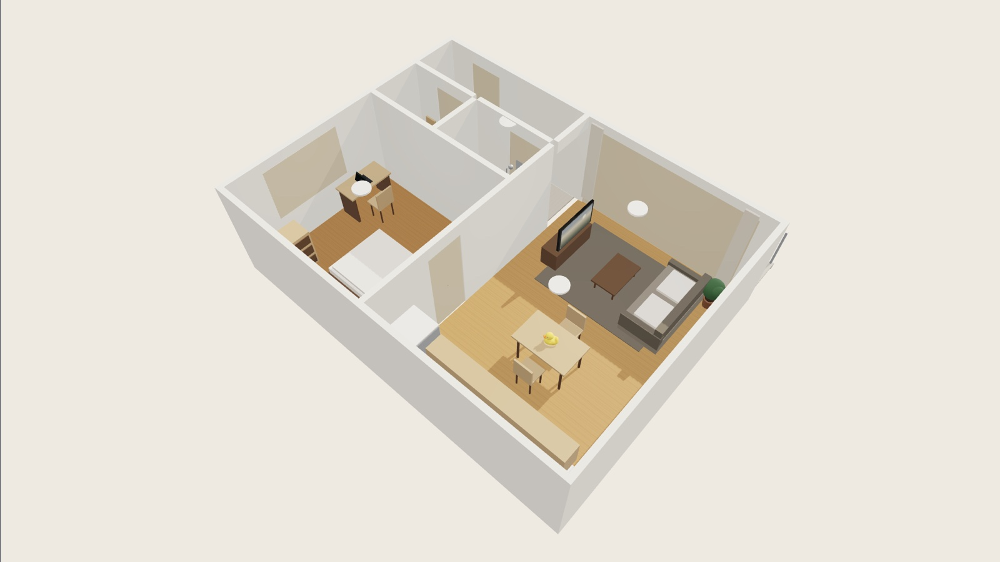
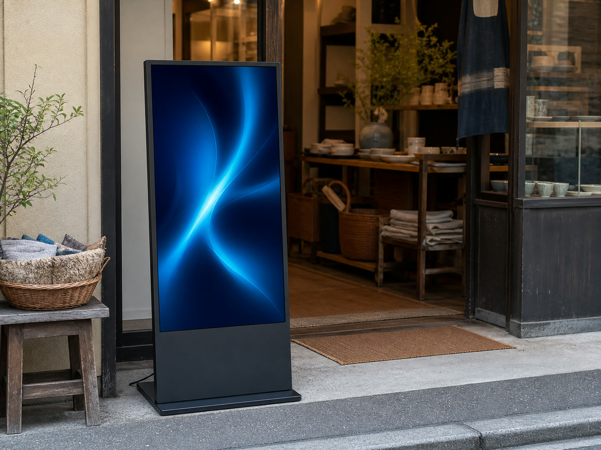
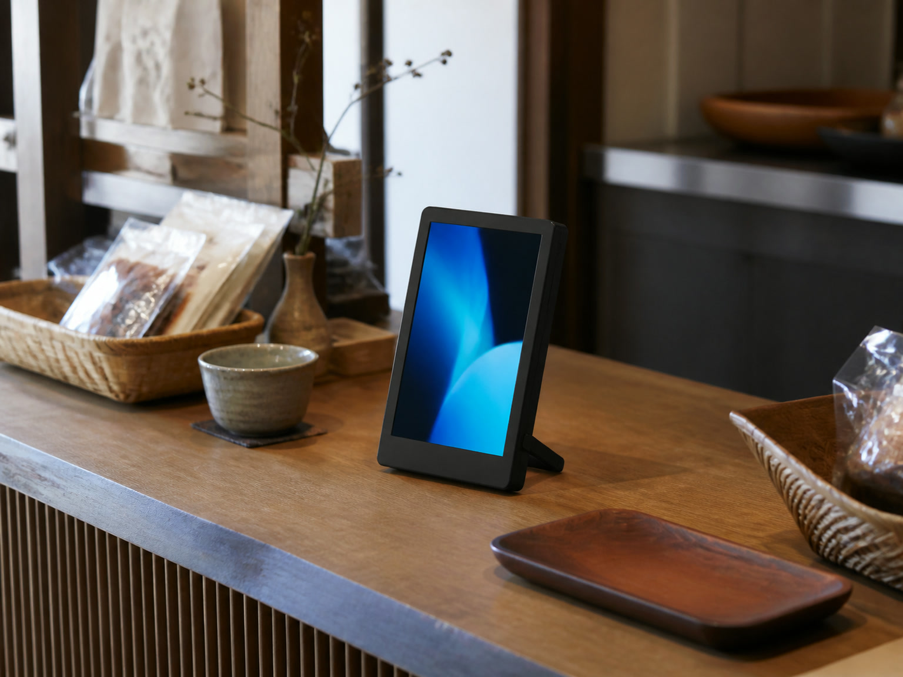

企画から相談できる
目的・媒体・ターゲットを整理し、何をどう見せるべきかから一緒に設計します。
企画から納品まで、目的に合わせて必要な制作範囲を整理します。SNS動画、採用PR、AI映像まで、使う場所に合わせて伝わる形に仕上げます。
SNSショート、採用PR、店舗紹介、医療・学校系、AI映像まで。目的に合わせて、伝わる形に編集します。
媒体、目的、ターゲットを整理し、投稿に使える動画の型から一緒に設計します。
社員インタビュー、職場紹介、求人導線まで、伝える順番を組み立てます。
生成AI、既存素材、撮影素材を組み合わせ、実務で使える形へ落とし込みます。
企画だけ、撮影だけ、編集だけ、継続運用まで。必要な制作範囲に合わせて組み立てます。
Short
TikTok / Instagram Reels / YouTube Shorts / X / Facebook向け。企画・台本・撮影・編集・投稿改善まで対応します。
Recruit
社員インタビュー、職場紹介、学校・医療・店舗の採用PRに対応します。
PR
商品紹介、サービス紹介、店舗紹介、イベント告知などに対応します。
Edit
素材支給での編集、撮影だけ、編集だけのご相談にも対応します。
AI
AI画像、AI動画、AI音声、台本作成、ナレーション、アニメーション表現にも対応します。
Live
ウェビナー、イベント、発表会、セミナー配信などに対応します。
目的・媒体・ターゲットを整理し、動画の方向性を決めます。
伝える順番や見せ方を設計し、視聴者に伝わる構成を作ります。
必要なカットを現場で撮影します。スマホ素材や既存素材の活用も可能です。
テンポよく見られるようにカットし、SNS向けに整えます。
内容が伝わりやすく、視聴維持しやすいテロップを入れます。
Instagram、TikTok、YouTube Shorts、X、Facebookなど、用途に合わせて書き出します。
企画から撮影・編集・投稿・分析まで、TikTok運用の専門チームが一貫対応します。
全プラン共通：企画作成・台本作成・撮影・編集・投稿・コメント返信・レポーティングまで一貫対応
Light
¥117,750 / 月（税込）
まずは週1本の投稿から、無理なくTikTok運用を始めたい方へ。
いちばん選ばれています
Standard
¥157,000 / 月（税込）
週2本の投稿ペースで、アカウントを安定して育てたい方へ。
Premium
¥235,500 / 月（税込）
露出を最大化し、アカウントを最短で伸ばしたい方へ。
Custom
単発の動画制作・撮影・ライブ配信・アニメーション・AI動画制作にも対応しています（個別見積）。
内容を相談する表示価格はすべて税込です。撮影内容やご要望に応じたカスタマイズもお見積もりします。
| 内容 | ライト | スタンダード | プレミアム |
|---|---|---|---|
| 投稿本数 | 月4本（週1） | 月8本（週2） | 月15本（ほぼ毎日） |
| 撮影回数 | 月1回 | 月2回 | 月3回まで |
| 改善サポート | 月次レポート | 月次レポート＋改善提案 | 週次レポート＋月次戦略MTG |
| 企画〜投稿・返信まで一貫対応 | ○ | ○ | ○ |
動画制作に加え、Webサイトや3D空間など、見て・触れて伝わる体験コンテンツの企画・制作にも対応しています。

WALKABLE 3D / 360°
1LDKとスタジオを切り替えながら、室内を歩行・俯瞰・360°で体験。間取り図から移動したい場所を選び、空間のつながりを確かめられます。
動画を作って終わりではなく、店頭・受付・商品横・展示会など、実際にお客様の目に触れる場所で再生できる状態までサポートします。機器選びから設置・初期設定・動画制作までまとめてご相談いただけます。


LARGE
お店の前で、動画が営業してくれる。
店舗入口や店頭に置ける大型の動画サイネージです。サービス紹介、商品PR、採用、キャンペーンなど、伝えたい内容を動画で繰り返し表示できます。
機器選定・搬入・設置・初期設定・再生確認から、店舗用動画の制作までまとめて対応します。
動画制作は内容・尺・素材に応じて別途です。表示価格はすべて税込です。用途・設置場所・動画内容に合わせて機器を選定し、必要な機器を実費ベースでご提案します。設置環境に応じて屋内用・屋外対応モデルをご提案します。
動画看板について相談するMINI
あなたの事業を、置くだけで動画で伝える。
受付、レジ横、商品横、商談スペース、展示会などに置けるコンパクトな動画ディスプレイです。紙のPOPでは伝えにくいサービスの特徴や使い方を、映像・写真・テロップで分かりやすく伝えられます。
動画制作は内容・尺・素材に応じて別途です。表示価格はすべて税込です。サービス紹介、商品紹介、Before / After、料金・メニュー紹介、採用動画、キャンペーン告知など、用途に合わせて個別にご提案します。
動画看板について相談する「どの機器を選べばいいか分からない」「買ったあと、どう設定すればいいか分からない」そんな部分も含めてご相談いただけます。動画制作、機器選定、導入、設定まで、実際に使える状態を一緒につくります。
ドーガづくり
SNS動画・採用PR・AI映像制作を中心に、企画・撮影・編集・投稿改善まで対応する映像クリエイター。Premiere Proを中心に、生成AI・アニメーション・ナレーション制作も活用し、目的に合わせた動画づくりを行っています。
可能です。目的や使いたい媒体、素材の有無を伺いながら、必要な動画の方向性から一緒に整理します。
可能です。スマホ素材、写真、既存動画を組み合わせたSNS向け動画にも対応しています。
可能です。既存素材の編集や短尺動画など、予算に合わせた制作範囲をご提案します。
可能です。投稿文作成、投稿設計、簡易レポート、改善提案まで対応できます。
可能です。生成AIを活用した画像・動画・音声制作、ナレーション、アニメーション表現にも対応しています。
可能です。セミナー、発表会、ウェビナー、イベント配信などに対応しています。カメラ台数、使用機材、拘束時間によって費用が変わるため、個別にお見積りします。
機器販売を目的としたサービスではなく、機器代実費と導入設定サポートを基本に、動画制作を含めて対応しています。用途に合う機器選びからご相談いただけます。
対応機種ではループ再生が可能です。複数の動画を順番に再生する設定なども、用途に合わせて対応します。
可能です。機種に応じてUSB等での差し替えや、対応モデルではネットワーク経由での更新も可能です。
設置環境に応じて屋外対応モデルをご提案します。必要な防水・防塵性能や画面の明るさが変わるため、環境を確認して機種を選定します。
LARGEは店舗入口や店内で目を引く大型タイプ、MINIは受付・レジ横・商品横・展示会などで使いやすい持ち運びタイプです。
作りたい動画のイメージ、使いたいSNS、予算感などをお聞きしながら、必要な制作範囲を一緒に整理します。